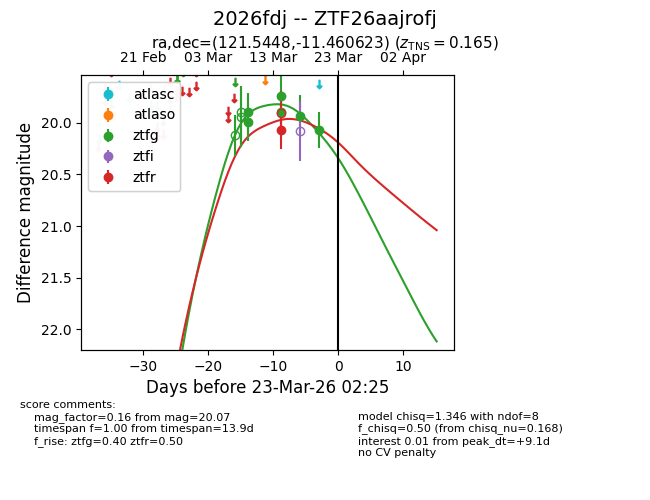
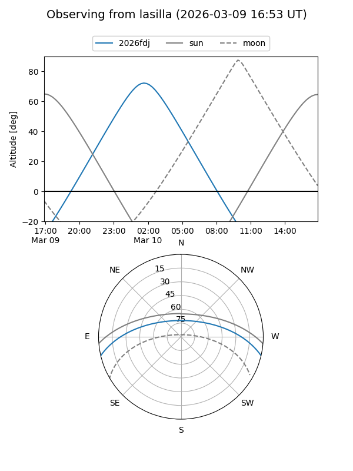
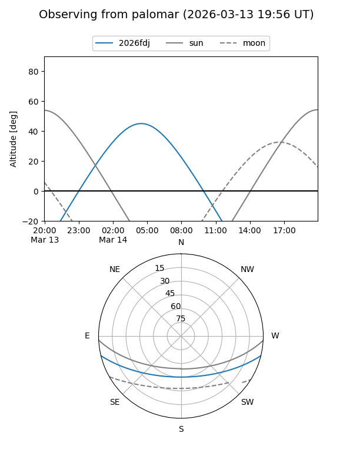
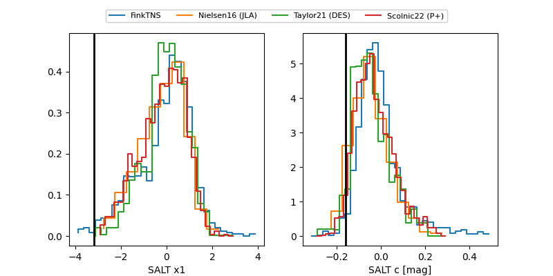

2026fdj
Target 2026fdj at 2026-03-23 02:27
Aliases and brokers:
FINK: link
Lasair: link
ALeRCE: link
TNS: link
YSE: link
alt names
ZTF26aajrofj (ztf,fink_ztf)
2026fdj (tns,yse)
Coordinates:
equatorial (ra, dec) = 121.5448,-11.46062
equatorial (HMS+DMS) = 08:06:10.76,-11:27:38.24
galactic (l, b) = (231.9502,+10.88509)
Flags:
confirmed ia
Photometry:
last ztfg=20.07, ztfr=20.07
6 ztfg, 1 ztfr detections
Lightcurve

Visibility


Additional plots
